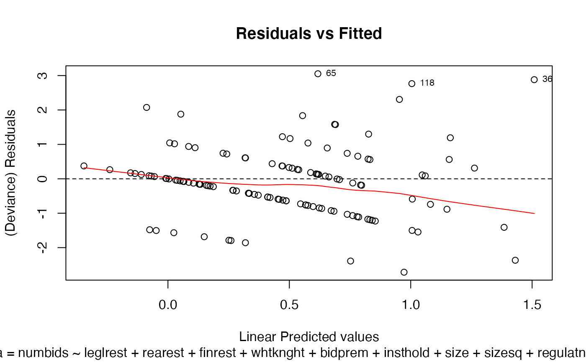
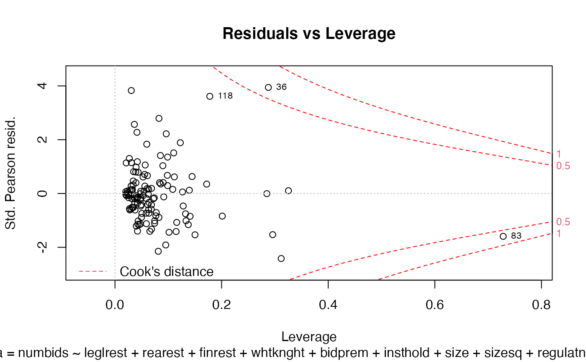

Eight plots (selectable by which) are currently available:
a plot of deviance residuals against fitted values,
a non-randomized PIT histogram,
a uniform Q-Q plot for non-randomized PIT,
a histogram of the normal randomized residuals,
a Q-Q plot of the normal randomized residuals,
a Scale-Location plot of sqrt(| residuals |) against fitted values
a plot of Cook's distances versus row labels
a plot of pearson residuals against leverage.
By default, four plots (number 1, 2, 6, and 8 from this list of plots) are provided.
# S3 method for cmp plot(x, which = c(1L, 2L, 6L, 8L), ask = prod(par("mfcol")) < length(which) && dev.interactive(), bins = 10, ...)
Arguments
| x | an object class 'cmp' object, obtained from a call to |
|---|---|
| which | if a subset of plots is required, specify a subset of the numbers 1:8. See 'Details' below. |
| ask | logical; if |
| bins | numeric; the number of bins shown in the PIT histogram or the PIT Q-Q plot. |
| ... | other arguments passed to or from other methods (currently unused). |
Details
The 'Scale-Location' plot, also called 'Spread-Location' plot, takes the square root of the absolute standardized deviance residuals (sqrt|E|) in order to diminish skewness is much less skewed than than |E| for Gaussian zero-mean E.
The 'Scale-Location' plot uses the standardized deviance residuals while the Residual-Leverage plot uses the standardized pearson residuals. They are given as R[i]/sqrt(1-h.ii) where h_ii are the diagonal entries of the hat matrix.
The Residuals-Leverage plot shows contours of equal Cook's distance for values of 0.5 and 1.
There are two plots based on the non-randomized probability integral transformation (PIT)
using compPIT. These are a histogram and a uniform Q-Q plot. If the
model assumption is appropriate, these plots should reflect a sample obtained
from a uniform distribution.
There are also two plots based on the normal randomized residuals calculated
using compnormRandPIT. These are a histogram and a normal Q-Q plot. If the model
assumption is appropriate, these plots should reflect a sample obtained from a normal
distribution.
See also
compPIT, compnormRandPIT,
glm.cmp and gg_plot.
Examples
data(takeoverbids) M.bids <- glm.cmp(numbids ~ leglrest + rearest + finrest + whtknght + bidprem + insthold + size + sizesq + regulatn, data=takeoverbids) ## The default plots are shown plot(M.bids)## The plots for the non-randomized PIT # plot(M.bids, which = c(2,3))